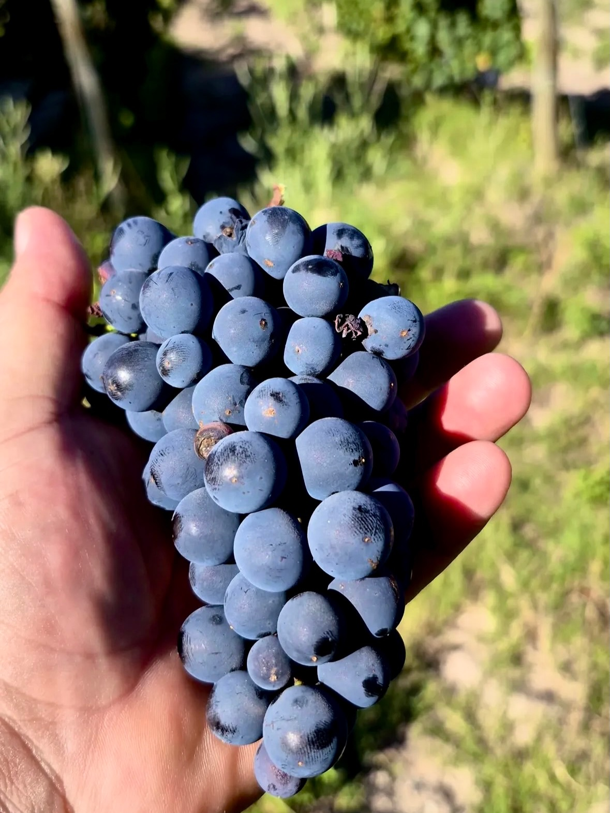
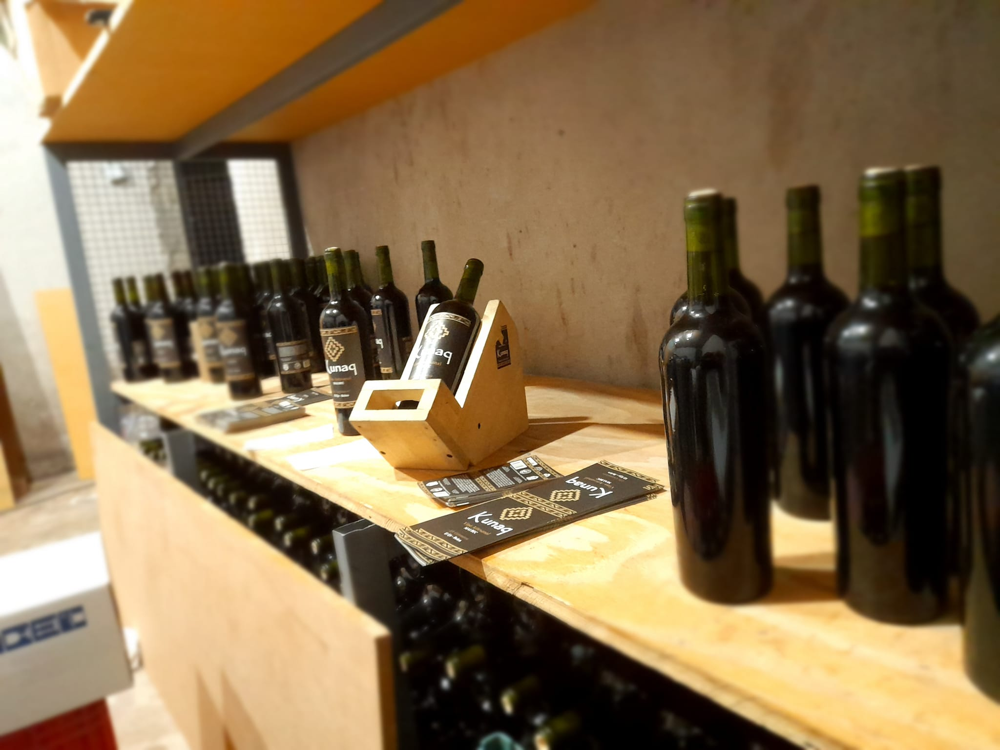
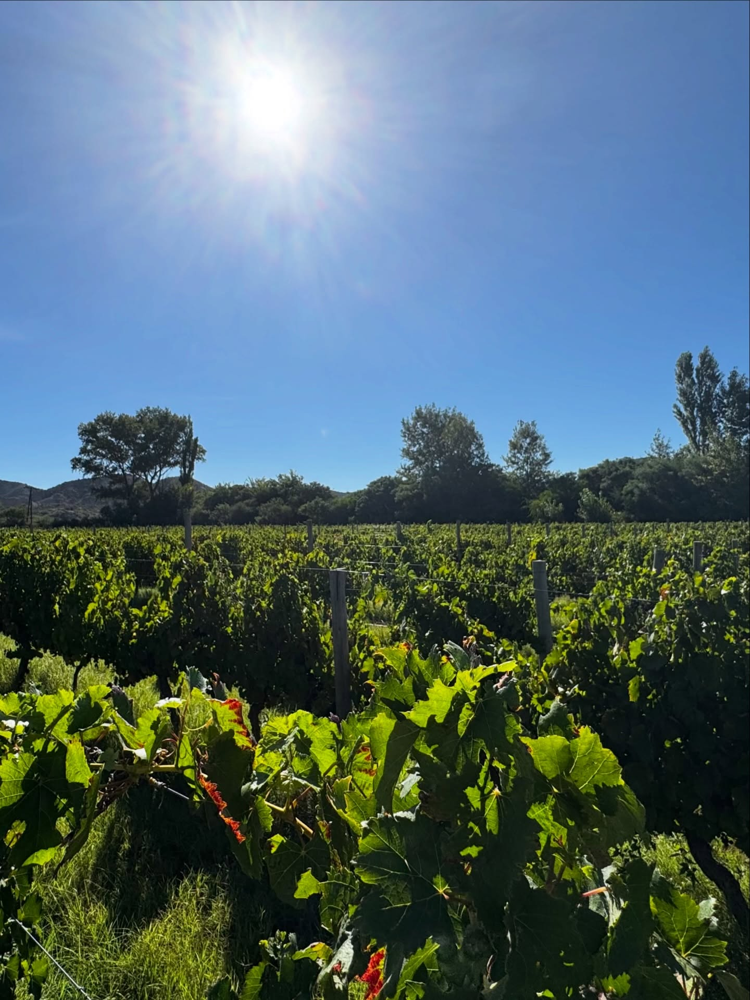
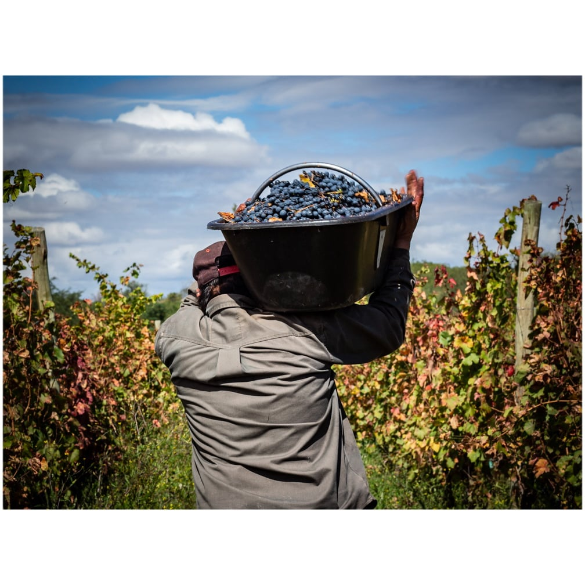
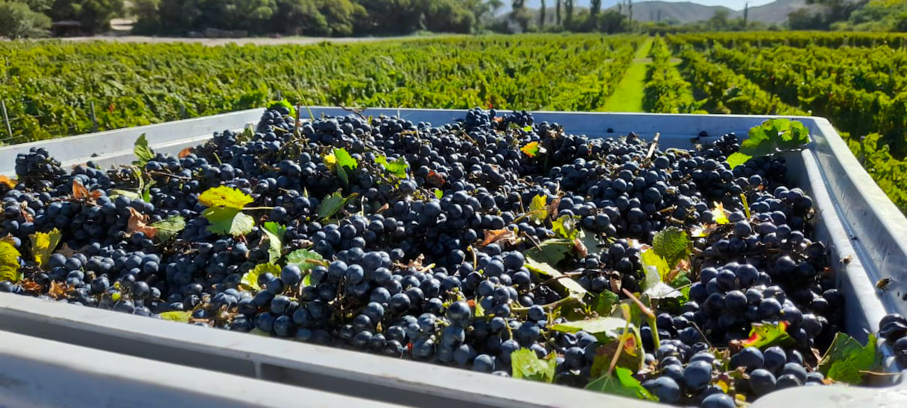

La vendimia manual
Cosechamos a mano, racimo por racimo. Sin máquinas, sin apuro — solo dedicación.
¿Tenés la edad legal para consumir bebidas alcohólicas?
Beber con moderación. Prohibida su venta a menores de 18 años.
INV Nº SEA-028 · Bodega Artesanal Kunaq · Valles de Hualfín, Catamarca.

Somos una bodega familiar ubicada en los Valles de Hualfín, Catamarca. Desde 2016 elaboramos vino artesanal Malbec con el cuidado de quien sabe que cada botella lleva el alma de nuestra tierra y el trabajo de nuestras manos.
A más de 1.500 metros sobre el nivel del mar, el sol fuerte del día y las noches frescas le dan a la uva una personalidad única. Sin aditivos, sin atajos — solo uva, tiempo y amor por el vino bien hecho.
Conocé nuestra historia
Valles de Hualfín · Catamarca · Embotellado en origen
Vino de cuerpo medio, con aromas frutales a ciruela y especias. Un final persistente y elegante que refleja la altura y la pasión con que fue elaborado.

Cosechamos a mano, racimo por racimo. Sin máquinas, sin apuro — solo dedicación.

La uva fermenta en piletas propias, con temperatura controlada naturalmente por las noches frescas del valle.

Embotellado en nuestra bodega de Hualfín. Cada botella lleva el sello de nuestra tierra.


